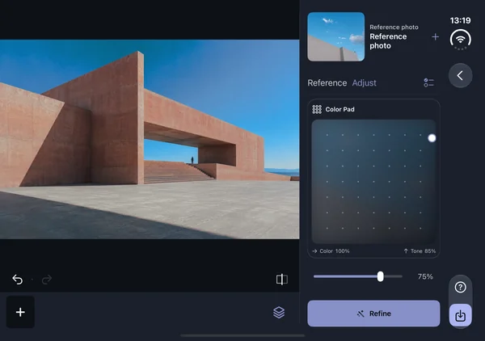
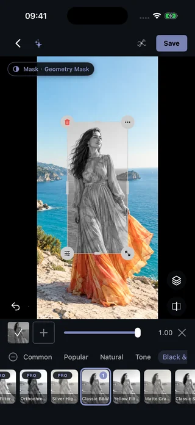
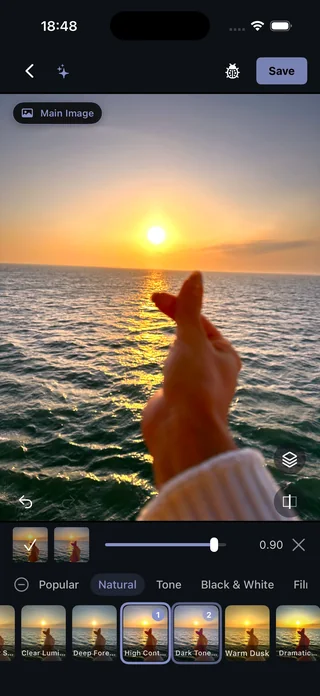
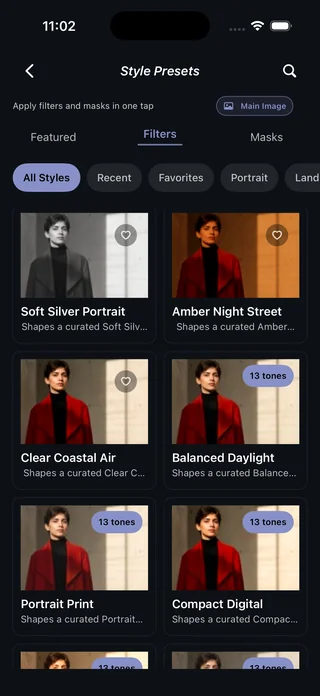
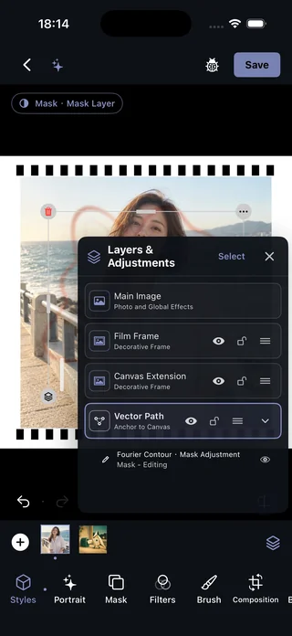

How to match photo colors to a reference
Choose a reference, adjust intensity, and inspect skin and tone. Understand the limits of color and light matching.
Reference color matching & photo editing
Photo editor for Apple platforms
iPhone · iPad
Keep your photo in view as you adjust it. Unfold Duo for side-by-side editing in landscape; turn to portrait for controls below, with your edit preserved.

Bold color in the sun, flags in the breeze, or flowers by a window. Borrow a feeling, then judge it on your own photo.
Photographs for color inspiration. See the color-matching guide for an actual edit.


Select an area, stack filters, start with a look, and organize your adjustments in layers.

Use a mask to adjust only the selected area.
Explore local photo adjustmentsView full interface, opens in a new window
Stack filters and adjust each one’s strength.
View full interface, opens in a new window
Start with a look, then tune it for your photo.
View full interface, opens in a new window
Review your adjustments in layers and keep editing.
View full interface, opens in a new windowChoose a reference, judge the result, and refine an area. Give each step a clear purpose.
Choose a reference, adjust intensity, and inspect skin and tone. Understand the limits of color and light matching.
Place an adjustment with masks and brushes, inspect its edges, and compare it with the whole image.
Available on the App Store
View on the App Store, opens the App Store in a new window